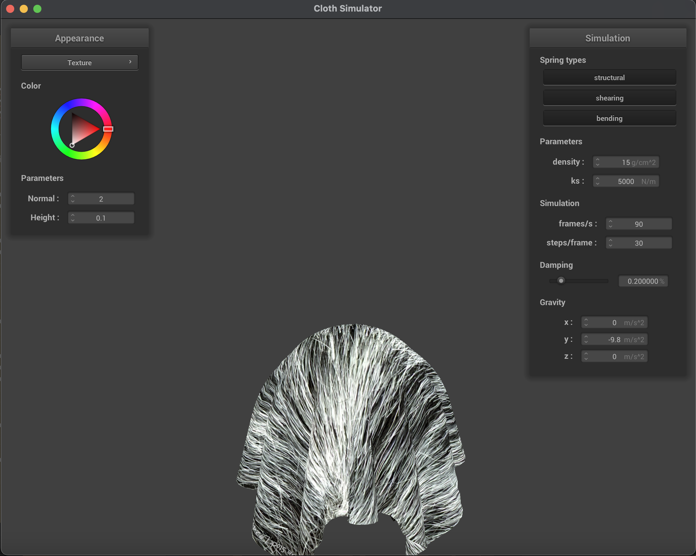
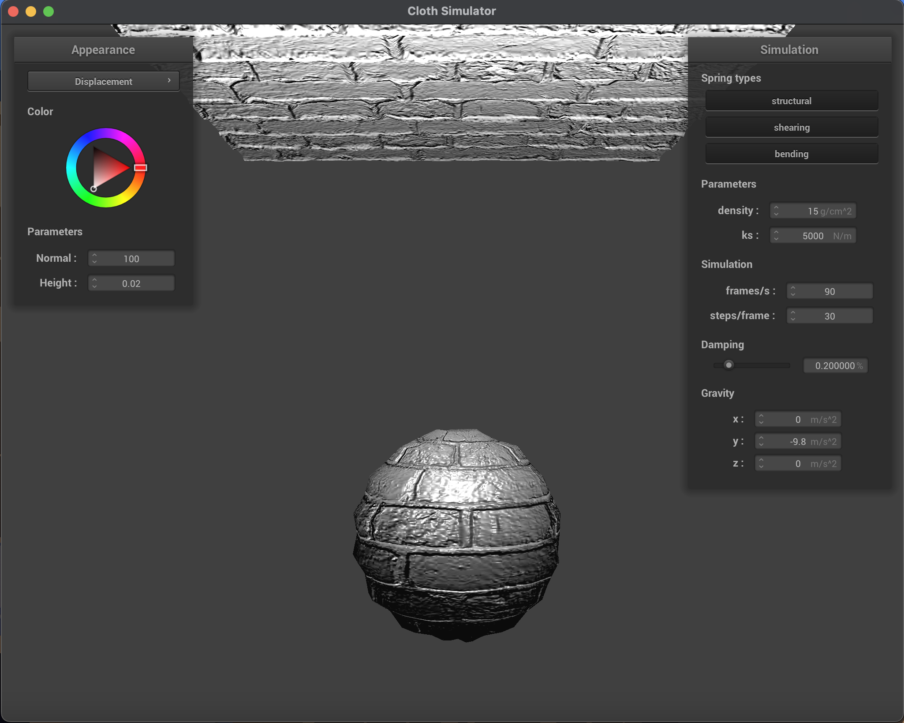

CS 184: Computer Graphics and Imaging, Spring 2024
Ian Dong
Overview
In this homework, I explored the physics behind cloth simulation by implementing a mass-spring system to
represent the cloth. I used Verlet integration to compute each of the PointMass objects' new position to simulate the cloth's movement. Then, I
implemented a way to detect cloth collision with outside objects as well as resolving self-collisions. Finally,
I added wind forces to the cloth to simulate the cloth's movement in the wind.
Section I: Masses and Springs
Explain how you implemented the mass-spring system to represent the cloth.
Because the cloth's springs needed to be in row major order, I first looped through the number of height
points as this represented each individual row before iterating through each of the width points to create
the required springs. I calculated the x position in order to fit
num_width_points within the cloth's width. Depending on whether the
cloth was horizontal or vertical, I made sure to set y to either be 1
or the correctly spaced out position fit the necessary number of width points and set z to either the correctly spaced out position fit the necessary number
of width points or the random offset. Before inserting the PointMass,
I checked to see the object should be pinned or not. Finally, I iterated through the two-dimensional grid
positions and converted them into the PointMass one-dimensional
vector position and checked for boundary conditions before creating the STRUCTURAL, SHEARING, and BENDING springs as listed in the homework description.
Take some screenshots of scene/pinned2.json from a viewing angle
where you can clearly see the cloth wireframe to show the structure of your point masses and springs.
Here are some screenshots of the cloth wireframe from
scene/pinned2.json:
pinned2.json close up view
|

pinned2.json above view
|
Show us what the wireframe looks like (1) without any shearing constraints, (2) with only shearing
constraints, and (3) with all constraints.
pinned2.json shearing/bending constraints
|
pinned2.json only shearing constraints
|

pinned2.json all constraints
|
Section II: Simulation via Numerical Integration
Explain how you implemented the numerical integration to simulate the cloth's movement.
To simulate the cloth's movement, I first calculated the total force exerted on each of the PointMass with the given external_accelerations vector. Afterwards, I applied the spring
correction forces to each of the PointMass objects using the
following equation:
$$f_{\vec{a} \rightarrow \vec{b}} = k_s \frac{\vec{b} - \vec{a}}{\|\vec{b} - \vec{a} \|}(\|\vec{b} - \vec{a}
\| - l)$$
I made sure to check if a particular spring was enabled and disregarded it if it was not. With the total
force calculated, I implemented Verlet integration to compute the new location for each of the PointMass objects using the following equation:
$$x_{t + dt} = x_t + (1 - d) \cdot (x_t x_{t - dt}) + a_t \cdot (dt)^2$$
where $a_t$ is the total force from before divided by the mass of the PointMass. $d$ represented the damping factor and was used to slow down the velocity of the cloth because in real life friction and air resistance are forces that oppose the velocity of the cloth. Finally, to ensure that the springs did not stretch more than 10% of their original rest length, I looped through each pair of springs and shifted them towards each other and checked for corner cases when they would be pinned and could not be adjusted.
Experiment with some the parameters in the simulation. To do so, pause the simulation at the start with
P,
modify the values of interest, and then resume by pressing P again.
You can also restart the simulation at any
time from the cloth's starting position by pressing R. Describe the
effects of changing the spring constant ks; how does the cloth behave
from start to rest with a very low ks? A high ks?
Here are the screenshots of the cloth from
scene/pinned2.json with
different
ks values:
pinned2.json with ks = 10
|
pinned2.json with ks = 100
|
pinned2.json with ks = 5000
|
pinned2.json with ks = 10000
|
At a low
ks, the cloth is much more elastic and less rigid and thus
throughout the simulation the fabric would stretch easier. As I increased the
ks, the cloth became stiffer and stiffer and less likely to stretch as
much. The cloth would also be more likely to rest in a more rigid position as the spring forces would oppose
gravity more. There were also fewer wrinkles as the cloth would be less likely to fold.
What about for density?
Here are the screenshots of the cloth from
scene/pinned2.json with
different
density values:
pinned2.json with density = 15
|

pinned2.json with density = 100
|
pinned2.json with density = 1000
|
pinned2.json with density = 10000
|
At a low
density, the cloth acted very similarly to a high
ks value as the cloth was less likely to stretch. The
top of the cloth had fewer deformations and wrinkles. Because the volume of the cloth never changed, a lower
density meant that the mass was smaller and so the force of gravity was
less likely to deform the cloth. As I increased the
density, the cloth
was more likely to stretch and deform as the mass was larger and the force of gravity was higher and could
oppose the spring forces more.
What about for damping?
Here are some
gifs that illustrate the effects of the
damping parameter on the cloth from
scene/pinned2.json. To view them, please
visit
https://cal-cs184-student.github.io/hw-webpages-sp24-ianhdong/hw4/.
pinned2.json with damping = 0
|
pinned2.json with damping = 25
|

pinned2.json with damping = 50
|
pinned2.json with damping = 99
|
Damping is a force that opposes the velocity of the cloth and slows it down. When there was no damping, the
cloth would oscillate wildly and did not come to rest. As I increased the damping, the cloth would come to rest
and the oscillations would dramatically decrease.
Show us a screenshot of your shaded cloth from scene/pinned4.json in
its final resting state! If you choose
to use different parameters than the default ones, please list them.
Here are the screenshots of the shaded cloth from
scene/pinned4.json in
its final resting state for both the wireframe and shaded versions:

pinned4.json wireframe
|
pinned4.json normals
|
Section III: Handling Collisions with Other Objects
Explain how you handled collisions with the sphere and the plane.
In this portion of the homework, I implemented a way to detect cloth collision with outside objects as well.
To handle collisions with a sphere, I modified Sphere::collide and
calculated the distance between the sphere's center and the given point mass to see whether it had already
intersected within the sphere. If it had, I calculated the penetration depth and moved the point mass out of
the sphere along the trajectory had it not collided, lying on the sphere's surface tangent. To handle
collisions with a plane, I modified Plane::collide and calculated to
see whether the two positions at the time steps were at opposite side of the plane If it was, I calculated
the penetration depth and moved the point mass out of the plane along the trajectory had it not collided,
lying on the plane's surface tangent. Finally, for both, we applied the friction and scaled down the
correction vector.
Show us screenshots of your shaded cloth from scene/sphere.json in its final resting state on the sphere
using the default ks = 5000 as well as with 500 and 50000. Describe
the differences in the results.
Here are the screenshots of the shaded cloth from
scene/sphere.json with
different
ks values in its final resting state on the sphere:
sphere.json with ks = 500
|

sphere.json with ks = 5000
|

sphere.json with ks = 50000
|
ks represents the stiffness of the spring. As the value of
ks increases, the cloth becomes more rigid and less likely to fully rest on
top of the sphere. As shown above, the leftmost image depicts the cloth almost fully resting on top of the
sphere and because the springs' corrective forces are weak more points on the sphere fall due to gravity.
However, the rightmost image depicts a more dramatic scene where the cloth is much more rigid and less likely to
fully rest on top of the sphere as the strong spring forces work to oppose gravity.
Show us a screenshot of your shaded cloth lying peacefully at rest on the plane. If you haven't by now, feel
free to express your colorful creativity with the cloth! (You will need to complete the shaders portion
first to show custom colors.)
Here is a screenshot of the shaded cloth lying peacefully at rest on the plane:
|
Cloth at rest on the plane
|
Section IV: Handling Self-Collisions
Explain how you handled self-collisions.
In this portion of the homework, I sped up checking whether two PointMasses were within 2 * this->thickness by building bounding boxes for each of the PointMasses and focusing only one spatial locality. For each point, I
hashed their location based on the bounding box it was in and stored it into a hash table. To check for
collision for a given point, I would the corrective vector to move it away from all of the other points
within that hash bucket and averaged it.
Section V: Shaders
Explain in your own words what is a shader program and how vertex and fragment shaders work together to
create lighting and material effects.
A shader program is used to determine how the pixels of an object get rendered, particularly in terms of
lighting, color, and texture. A vertex shader will operate on each of the object's vertices and primarily
helps manipulate the positions if needed. For example, it will convert between local space coordinates into
view space coordinates. They help create animations and the geometric representation
within a scene. Once each of the vertices have been processed, the fragment shader will then operate on each
of the individual pixels and help determine their color through lighting calculations and material sampling
as well as
shading intensities. Both shaders together help create the final image that is displayed on the screen.
Explain the Blinn-Phong shading model in your own words. Show a screenshot of your Blinn-Phong shader
outputting only the ambient component, a screen shot only outputting the diffuse component, a screen shot
only outputting the specular component, and one using the entire Blinn-Phong model.
The Blinn-Phong shading model is a shading model that is used to simulate the way that light interacts with and
object. It consists of 3 different components: ambient, diffuse, and specular. The ambient component is the
constant color that is present on the object regardless of the surface's orientation or the light's position.
The diffuse component is the color that is reflected uniformly off of the object's surface and gives the object
a matte appearance. The intensity of the diffuse component is dependent on the angle between the light source
and the surface normal. Finally, the specular component is the shiny highlights reflected off of the glossy
surface. it is dependent on the angle between the light source, the surface normal, and the camera and uses a
halfway vector between the light direction and viewer direction. The Blinn-Phong model is the sum of all three
components and is used to create a
more realistic lighting effect.
Here are the screenshots of the Blinn-Phong shader outputting the ambient, diffuse, specular, and the entire
Blinn-Phong model:
|
Ambient component
|
Diffuse component
|
|
Specular component
|
Entire Blinn-Phong model
|
Show a screenshot of your texture mapping shader using your own custom texture by modifying the textures in
/textures/.
Here is a screenshot of the texture mapping shader using my own custom texture:
|
Wolf Fur Texture
|

Wolf Fur Texture Mapping
|
Show a screenshot of bump mapping on the cloth and on the sphere. Show a screenshot of displacement mapping
on the sphere. Use the same texture for both renders. You can either provide your own texture or use one of
the ones in the textures directory, BUT choose one that's not the default texture_2.png. Compare the two approaches and resulting renders in your
own words. Compare how your the two shaders react to the sphere by changing the sphere mesh's coarseness by
using -o 16 -a 16 and then -o 128 -a 128.
Here are the screenshots of bump mapping on the sphere and on the cloth as well as displacement mapping on the
sphere.
|
Bump mapping on the sphere
|
Bump mapping on the cloth
|
|
Displacement mapping on the sphere
|
Both bump mapping and displacement mapping are techniques used to achieve a more realistic texture surface
detailing such as adding grooves or wrinkles. Bump mapping, however, achieves this effect by simulating the
appearance and altering the way that light interacts with the surface of the object. Darker areas help represent
dents while light areas simulate protrusions. On the other hand, displacement mapping that actually changes the
geometry of the object as in the
vert file we needed to shift the vertex
positions. It will carry information about the height of the surface.
Here are the screenshots of the sphere with different coarseness values:
Bump mapping on the sphere with -o 16 -a 16
|
Bump mapping on the sphere with -o 128 -a 128
|

Displacement mapping on the sphere with -o 16 -a 16
|
Displacement mapping on the sphere with -o 128 -a 128
|
For the bump mapping, the sphere with a coarseness of 16 had a much smoother surface and the grooves were not as
pronounced. When it increased to 128, there were much more dents near the top of the sphere and sharp
differences under the lighting. For the displacement mapping, the sphere with a coarseness of 16 had a much
smoother surface as well when I had zoomed in and the protrusions did not seem so prominent because there are
fewer vertices. As I increased to 128, there were edges and detailed grooves that were much more pronounced.
Show a screenshot of your mirror shader on the cloth and on the sphere.
Here are the screenshots of the mirror shader on the cloth and on the sphere:
|
Mirror shader on the cloth
|
Mirror shader on the sphere
|
Extra Credit: Explain what you did in your custom shader, if you made one.
I decided to build 4 different kind of shaders: a cel shader, a fog shader, a shadow shader, and a
transparent shader. For the latter three shaders, I added a plane to the sphere cloth simulation to show the
effects more clearly.
-
I wanted to create similar shading to what I have seen in old cartoons. For this shader, I used the
Lambertian diffuse shading and quantized it into different
levels by floor modding it to the closest multiple of 0.25 before using this as the shading level for
the color intensity. In the images shown below, there
are distinct levels and noticeable jumps between the shading.
-
For the second shader, I decided to simulate a fog effect. Pixels farther away would have lower
visibility so I found the distance between the camera and the pixel and scaled it down to calculate the
visibility score. Then, I mixed the pixel color with the fog factor and scaled
the new fog color by the lighting calculated similarly in the Lambertian diffuse shading. In the images
shown below, farther pixels from the camera seem to blend in more with the background color and a foggy
effect surrounds the bottom of the sphere.
-
I modified my fog shader to create a shadow shader, specifically I changed the alpha variable to
indicate how opaque the shadow should be. In the images shown below, the shadow is casted on the plane
and the sphere.
-
Finally, I built a transparent shader by modifying my Blinn-Phong shader and changed the opacity of each
pixel. By decreasing the alpha value of the output color, I was able to create a transparent effect. In
the images shown below, the sphere is transparent and the cloth behind it is visible through it.
|
Cel Shader: Sphere
|
Cel Shader: Cloth
|
|
Fog Shader: Sphere on Plane
|
Fog Shader: Cloth on Plane
|
|
Shadow Shader: Sphere on Plane
|
Shadow Shader: Cloth on Plane
|
|
Transparent Shader: Sphere on Plane
|
Transparent Shader: Cloth on Plane
|
Section VI: Extra Credit
For this homework, try adding some additional technical features to further improve your cloth simulation!
I decided to simulate wind forces acting upon the cloth and used Perlin noise to generate smooth continuous
directional vectors procedurally to represent a coherent flow pattern. First, I researched how to implement
Perlin noise
through helper C++ libraries as well as the background theory behind it. With the help of this Wikipedia article, I built my own Perlin noise
generator and later I imported in this GitHub
repository for further use.
The final formula for the wind force was Vector3D(-1, -2, -3) \(\cdot
e^{-\text{perlin} \cdot \text{delta_t}}\). Finally, I applied this to every single PointMass at every time step. Here are a few
screenshots of wind acting upon the cloth where the wind acts more strongly towards the bottom. To view the
gif, please
visit https://cal-cs184-student.github.io/hw-webpages-sp24-ianhdong/hw4/.
|
Wind Simulation Image 1
|
Wind Simulation Image 2
|
|
Wind Simulation Image 3
|
Wind Simulation Image 4
|
Credits
Here were the resources that I used to help me complete this homework. Special thanks for giving me the
starting points and allowing me to build off of them.